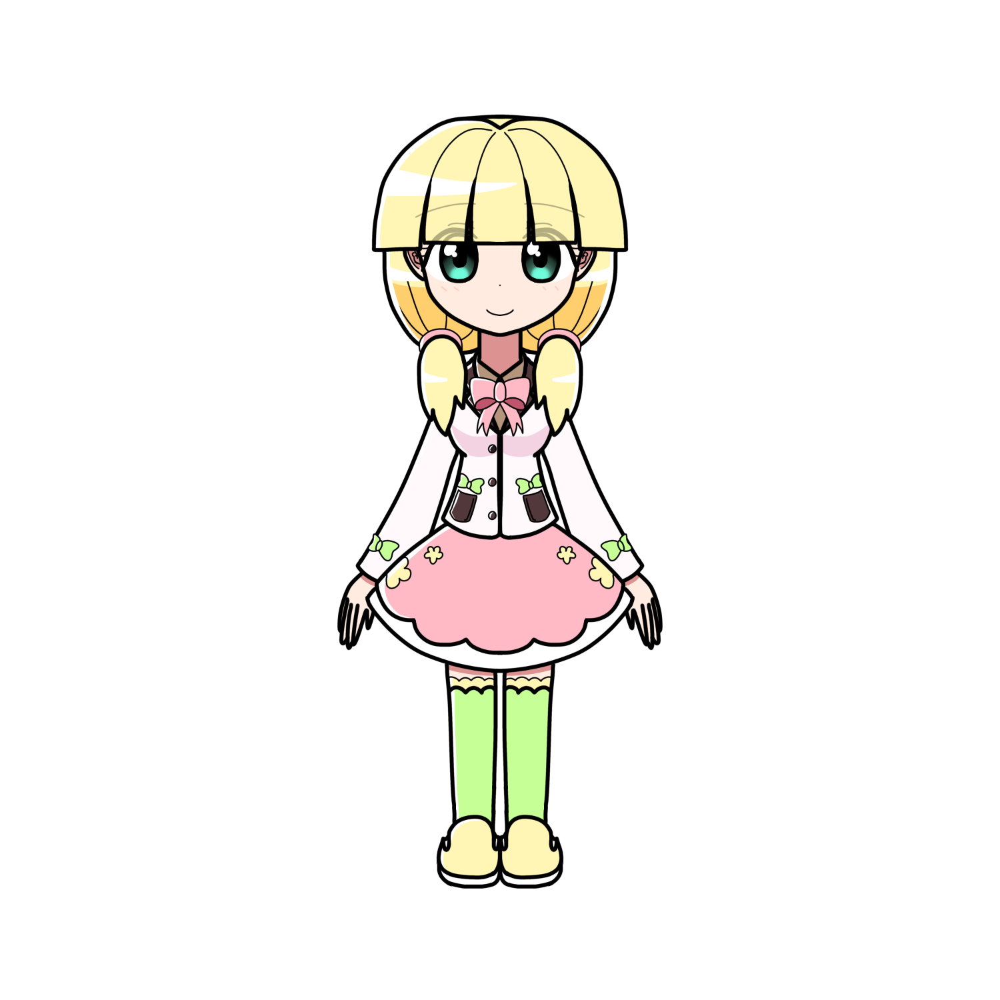

フラッフィア・ハイブ
概要
プロフィール
| 種族 | マリオネット |
|---|---|
| 性別 | 女性 |
| 年齢 | 17歳 |
| 誕生日 | 3月23日 |
| 身長 | 155cm |
| 血液型 | A型 |
| 出身 | ギゼリエ |
| イメージカラー | 黄色 |
| イメージCV | 上田麗奈 |
人物像
外見
性格
動物を愛する心優しい少女。
基本的に怖がりで、
余りに獰猛な動物や生物を前にすると怯えてしまう。
人見知りで、他人と話すのが苦手。
だが人当たりはよく、本人は皆と友達になりたいと思っている。
男子達から隠れた人気がある。
普段自己主張をしないだけで、 意外と自分の意見ははっきりと持っている。
小鳥と子ウサギを一羽ずつ飼っている。 動物に総じて好かれており、
彼女の近くにはウサギや鳥、リスなどがやってくることが多い。
ベジタリアン。分類はラクト・オボ・ベジタリアン。
つまり肉や魚は食べられないが、卵や乳製品は食べられる。
肉を食べる感触がどうしても苦手であるそう。
ベジタリアンになったのは動物愛護的立ち位置だから、というわけではない。
後述する要因で受け付けられなくなってしまったからである。
口調
一人称は「わたし」 丁寧な女性口調。 初対面の人には敬語。
能力
経歴
今から約6年前の2月。
フラッフィアは家族と友達を連れて、
観光目的でエーデリーヌのとあるホテルに泊まっていた。
深夜、ホテルが大火災に遭う。
黒煙で次々と倒れていく人々。
窓を割って高いところから飛び込んで亡くなっていく母親。
父親も外に飛び込もうとした。
フラッフィアを抱きかかえながら。
父親は亡くなってしまったが、
フラッフィアは父の身体がクッションとなり無事助かった。
だがそれ以降、
フラッフィアは火と焼かれた肉に
強いトラウマを持つようになってしまう。